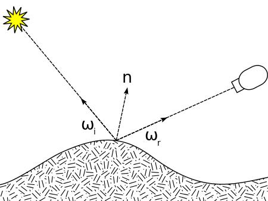

[图形]渲染方程
BRDF

The bidirectional reflectance distribution function (BRDF; ) is a function of four real variables that defines how light is reflected at an opaque surface. It is employed in the optics of real-world light, in computer graphics algorithms, and in computer vision algorithms. The function takes an incoming light direction, , and outgoing direction, (taken in a coordinate system where the surface normal lies along the z-axis), and returns the ratio of reflected radiance exiting along to the irradiance incident on the surface from direction . Each direction is itself parameterized by azimuth angle and zenith angle , therefore the BRDF as a whole is a function of 4 variables. The BRDF has units sr−1, with steradians (sr) being a unit of solid angle.
表示光与物体表面进行交互然后反射出去，是物体对光的一个作用
定义光如何在不透明表面反射的函数，它有四个参数
想象一下，有一束光线打到镜子上，它会反射到某个方向上去。如果光打到漫反射物体，会被反射到四面八方。我们想要一个函数来描述反射这一性质。
我们可以描述成，光从某个方向进来，并且反射到某个方向上去，这部分反射的能量应该是多少（不同的反射方向上会分布多少能量）

从来的Irradiance打到上（现在面积就是单位面积了）,这部分面积会吸收能量。再把吸收的能量发射出去。
相当于入射的Irradiance会在表面转化成Power，然后Power又会辐射到另一个方向上
那么那一块单位面积从某一个方向上的立体角接收到的Irradiance有
这些接收到的能量会被分配到各个不同的立体角上发射出去，但是在某个方向（某个立体角）上会辐射多少能量？
立体角上辐射多少能量和总能量有比例关系，对于任何一个出射方向都算出radiance，然后除以面积上的irradiance，这就是BRDF的定义

单位：
Reflection Equation
既然BRDF描述了一个点（微小面积）在任何方向上的反射结果。现在我们盯着某一个反射方向，并且我们知道物体表面可以接收四面八方的光照，那对于每一个入射方向的radiance，乘以（这里乘上这个之后就变成了irradiance）再乘以BRDF（变成出射的radiance），再把结果加起来，就得到了，这个点在所有可能的入射方向上，最后反射到某个方向上的radiance

任何光照的进入方向对观测点出射方向的贡献的叠加
从某个方向看某个着色点其实是个积分，积分考虑任何方向的的radiance到着色点，经过BRDF变成出射的radiance
根据反射方程定义，可以推断，除了光源对着色点有贡献，其他物体反射的光其实对着色点也有贡献，也就是说，入射的radiance不一定是光源的，也可能是其他物体反射出来的radiance 公交车。很像递归，毕竟光线在场景中不止弹射一次（如果限制只弹一次，那就只有光源的radiance）。
Rendering Equation
万一物体自己还会发光，再把这部分光叠加到反射方程上
改写为法线n点乘入射方向
其中：
：单位时间内点向方向贡献的光的radiance
：单位时间内点发的光向方向贡献的radiance
：BRDF，表示在点，方向来的光与物体表面进行交互，反射到方向的光的radiance
：表示单位时间内点接受的方向的radiance
：表示光来的方向由于角度带来的衰减
：表示半球面，是反射发生的那个半球面
现在无论是其他物体反射的光，还是发光体发出的光，都当作发光体，公式不需要任何修正
显然，和未知，其他是已知的
现在对方程简写
是辐射出去的radiance
是射入，是射出
是自己发光
是BRDF
进一步的，将方程简化为算子
辐射出来的所有能量 等于 自己发光 加上 其他辐射到物体上并被反射的能量
这个算子可以被离散成矩阵方程，和是向量，是矩阵
结论中，是光源，是直接光照，反射一次，是间接光照，反射两次，依此类推
将所有不同光线弹射次数的结果加起来，就是全局光照（Global Illumination）
光栅化一般只做
总结
渲染方程是一个积分方程，而且是高维积分，可以一直展开（递归）
因为可以递归，所以可能出现跳不出递归的情况（两面镜子对着看，无限反弹233）
渲染方程无法用牛顿莱布尼兹公式来计算积分，因为我们不知道BRDF的解析式，也就不知道被积函数的解析式
参考
Bidirectional reflectance distribution function - Wikipedia